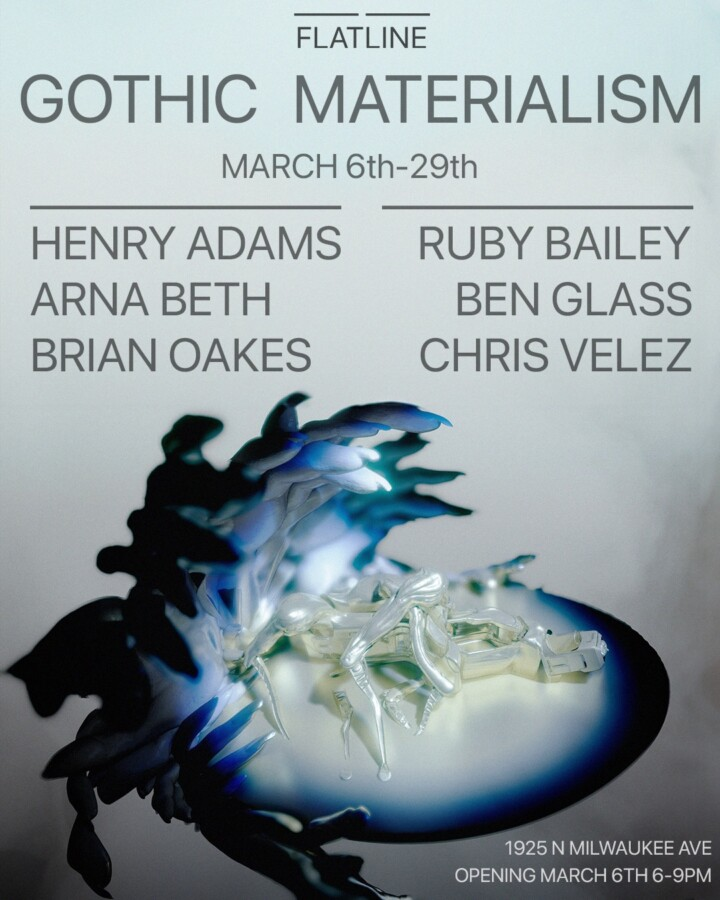

Gothic Materialism Opening Night
Flatline Gallery is pleased to present its inaugural show: Gothic Materialism, a group exhibition featuring the artists Henry Adams, Ruby Bailey, Arna Beth, Ben Glass, Brian Oakes, and Chris Velez.
The gallery’s first show develops out of ongoing conversations with artists around technology’s relationship to mysticism and historical consciousness. Gothic Materialism frames the exhibition’s curatorial approach, reconsidering our present reality through the clash of transcendental and material forces, and situating contemporary practice on the margins of organic and nonorganic life.
The exhibition takes its name from Mark Fisher’s 1999 PhD dissertation Flatline Constructs: Gothic Materialism and Cybernetic Theory-Fiction, which articulates an aesthetic landscape shaped by cybernetic theory and speculative thought.
Traditional academic and art world structures struggle to keep up with exponential new developments in work that contends with technology, just as much as one struggles to understand the impact on one’s own psyche. If late capitalism’s cancelled futures and cultural melancholia were in part brought about by cybernetic hyperreality, where does that leave “New Media” as a discipline of artistic practice? It’s through the utilization of electronic processes or aesthetics—and the ghosts that haunt them—that the self-reflexivity of cybernetic forms can be explored. Fisher’s Gothic flatline is “a plane where it is no longer possible to differentiate the animate from the inanimate and where to have agency is not necessarily to be alive.”
Curator: Olivia Adele Ek
The exhibition spans painting and sculptural works that incorporate both traditional and digital modes of production. Hand-rendered surfaces coexist with etched metal, 3D-printed forms, and other technologically mediated materials, reflecting a continuum between historical techniques and contemporary fabrication.
Gothic Materialism inaugurates Flatline Gallery as a space dedicated to work that moves between historical inquiry and contemporary technological practice. Located inside a reconverted hair salon in the Bucktown neighborhood of Chicago, Flatline Gallery is an artist-run gallery founded by friends and artistic-collaborators Ben Glass and Lorenzo Osterheim. Through rotating monthly exhibitions and regular programming Flatline will showcase a network of international emergent artists and artforms.